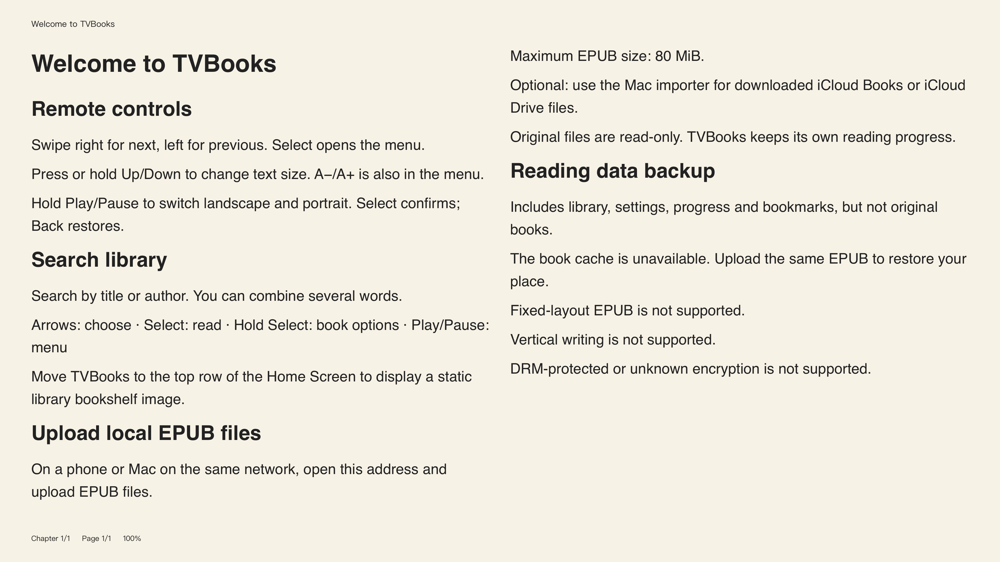
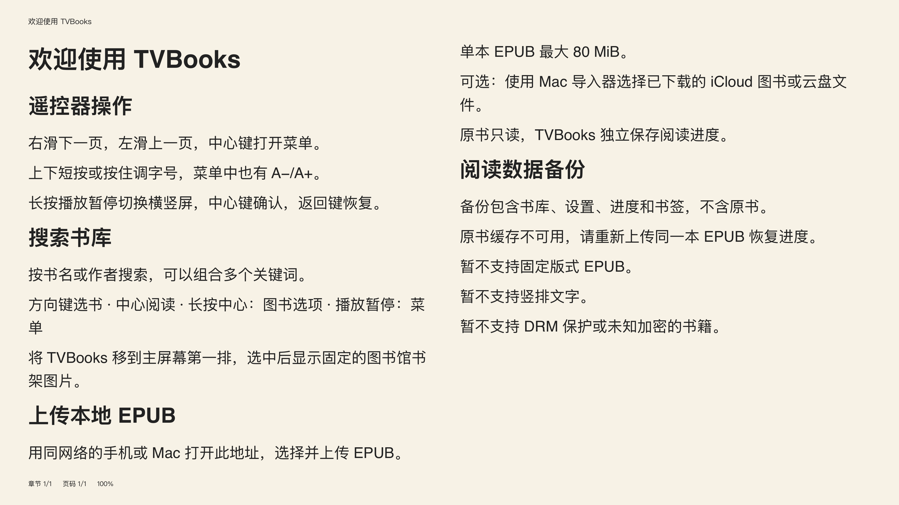

Give your next
chapter room.
让一整章，
展开在眼前。
Your 4K display can be a beautiful place to read. See more of a chapter at once, turn the screen into a larger book, and stay with the words.
让 4K 大屏成为一本好读的书。把更多章节内容放在同一屏，减少翻页打断；转成竖屏，让文字在一页里从容展开。
Preparing for the App Store · Apple TV · tvOS 17+正在准备上架 · Apple TV · tvOS 17+


Actual TVBooks layout · Original getting-started bookTVBooks 实际排版画面 · 原创入门书
Follow the idea.
Keep the context.
一眼多读一些，
思路少断一些。
Spread the page across one, two or three columns. A suitable short chapter can fit on a single screen, keeping the beginning and the end together. Choose the text size that suits your distance from the display.
用一栏、两栏或三栏展开正文。长度合适的短章节，可以在一屏完整呈现，前后的内容更容易相互对照。根据观看距离调整字号，让大屏真正服务于阅读。
How much fits depends on chapter length, font size, spacing and display orientation. Long chapters continue naturally over multiple pages.
每屏可容纳的内容取决于章节长度、字号、行距和屏幕方向；较长章节仍会正常分页。
Room for a quieter thought.
A page can be a place to settle. Give a thought enough room, and its shape becomes easier to see.
Read the sentence, then the paragraph around it. Let the whole passage remain in view. A small connection at the beginning may find its answer near the end.
There is no single right distance from a book. Sit closer for a page full of detail, or enlarge the type and let the words breathe.
Turn the display, and the familiar shape returns: a tall page, a clear margin, a quiet line of text.
Nothing asks for your attention except the next idea. Pause when you need to. Come back to the same place.
ORIGINAL TEXT · LAYOUT ILLUSTRATIONTurn the screen.
Open a bigger book.
把屏幕转过来，
就是一本大号的书。
A physically rotated monitor becomes one generous portrait page. Switch between landscape and your preferred portrait direction with the remote, while keeping your place.
将显示器物理旋转后，正文以完整的竖向单页展开。用遥控器快捷切换横屏与常用竖屏方向，重排后继续留在原来的阅读位置。
- Landscape, clockwise portrait or counterclockwise portrait横屏、顺时针竖屏、逆时针竖屏
- Text sizes from 16 output pixels, with a near-reading preset字号低至 16 输出像素，另有近距离阅读预设
- Preview a direction and confirm, or let it safely revert切换先预览，确认保留或自动恢复
Portrait requires a display that can be physically rotated. Page illustration uses original text.
竖屏需要能够物理旋转的显示器。上方为原创文字排版示意。
Familiar simplicity.
A quieter way to read.
熟悉的简洁，
安静的阅读。
Inspired by the calm of Apple Books: clear typography, simple controls and a page that stays out of your way. TVBooks is an independent reader for Apple TV, built around your own DRM-free EPUB books.
以 Apple Books 般清晰、简洁的阅读体验为目标：版式干净，操作直接，让注意力留在文字上。TVBooks 是独立开发的 Apple TV 阅读器，用来阅读你自己的无 DRM EPUB 书籍。
A page at a time
自然翻页
Use the directional buttons or swipe left and right. Controls stay hidden while you turn pages.
方向键或左右滑动即可翻页，阅读提示不会在翻页时反复弹出。
Your kind of page
读成喜欢的样子
Adjust text, spacing, margins and theme. See immediate text-size feedback without losing your place.
调整字号、行距、页边距与主题。调字有即时反馈，重排保留阅读位置。
Find your next thought
快速找到，随时继续
Search titles and authors in a grid or list. Open contents, add bookmarks and continue where you left off.
网格或列表管理书库，按书名和作者搜索；用目录、书签与继续阅读回到想读的位置。
Bring a book.
Make yourself at home.
把自己的书，
放进自己的阅读空间。
Open local upload on Apple TV, scan or enter the address on your phone or Mac, and send a downloaded EPUB using the temporary pairing code. Books are laid out and read on the television.
在 Apple TV 打开本地上传，用同网络的手机或 Mac 打开电视显示的地址，输入临时配对码，上传已下载的 EPUB。导入后在电视本地排版和阅读。
Read the import guide →查看导入说明 →A fixed library image for your Home Screen. Your private book covers stay in your library.
主屏幕是一张固定的图书馆书架图，私人书籍封面留在应用书库里。
Pay once.
Read your way.
一次买断，
把空间留给阅读。
One purchase, with no subscription or in-app feature unlocks. See the App Store for the price in your country or region.
一次购买，不设订阅或应用内功能解锁。具体价格请查看所在地区的 App Store。
TVBooks does not include a commercial book catalogue. Requires your own supported EPUB files.
TVBooks 不附带商业图书库，需要自行导入支持的 EPUB 文件。